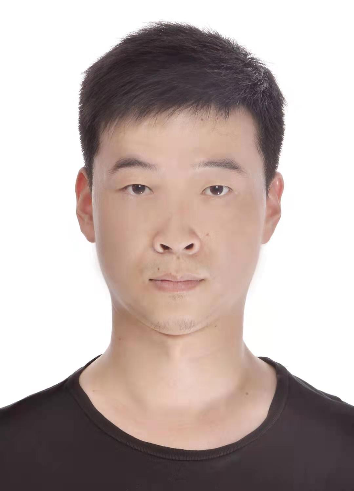

|
Leilei Gan
College of Computer Science and Technology
Zhejiang University
Zhejiang, China. 310000.
Email: leileigan αt zju dοt edu dοt cn
Goolge Scholar
|

|
Biography
I'm a Ph.D student in the College of Computer Science and Technology at Zhejiang University, coadvised by Prof. Fei Wu and Prof. Yi Yang. I am also so lucky to work with Prof. Jiwei Li and Associated Prof. Kun Kuang.
Prior that, I received my MSc degree in computer science from Nanjing University, China and BSc degree in computer science from Nanjing University of Posts and Telecommunications, China, respectively.
Research Interests
My research interests include natural language processing and machine learning. In particular, I am interested in transfer learning and knowledge intensive tasks in NLP.
News
-
[2021.11] It's my greatly honor to be sponsored by the CAAI-Huawei MindSpore Open Fund.
-
[2020.12] One paper was accepted by AAAI 2021.
-
[2020.09] One paper was accepted by TASLP.
Preprint
-
Leilei Gan, Jiwei Li, Tianwei Zhang, Xiaoya Li, Yuxian Meng, Fei Wu, Shangwei Guo, Chun Fan. Triggerless Backdoor Attack for NLP Tasks with Clean Labels, Arxiv, 2021.
-
Leilei Gan, Yating Zhang, Kun Kuang, Lin Yuan, Shuo Li, Changlong Sun, Xiaozhong Liu, Fei Wu. Dialogue Inspectional Summarization with Factual Inconsistency Awareness, Arxiv, 2021.
-
Leilei Gan, Yuxian Meng, Kun Kuang, Xiaofei Sun, Chun Fan, Fei Wu, Jiwei Li. Dependency Parsing as MRC-based Span-Span Prediction, Arxiv, 2021.
-
Leilei Gan, Zhiyang Teng, Yue Zhang, Linchao Zhu, Fei Wu, Yi Yang. SemGloVe: Semantic Co-occurrences for GloVe from BERT, Arxiv, 2020.
Publications
-
Leilei Gan, Kun Kuang, Yi Yang, and Fei Wu. Judgment Prediction via Injecting Legal Knowledge into Neural Networks, AAAI, 2021.
-
Leilei Gan, Yue Zhang. Investigating Self-Attention Network for Chinese Word Segmentation, TASLP, 2020.
-
Jie Zhang, Zhili Zhou, Shu Li, Leilei Gan, Xuyun Zhang, Lianyong Qi, Xiaolong Xu, Wanchun Dou. Hybrid computation offloading for smart home automation in mobile cloud computing, Personal and Ubiquitous Computing, 2018.
Selected Honors and Awards
Scholarship for outstanding PhD students, Zhejiang University
Second-Class Scholarship for graduate student, Nanjing University
Tongxi Award, Nanjing University
Academic Service
Journal Reviewer: TALLIP.
Conference Reviewer: ACL(2021, 2022), EMNLP(2019, 2020), AAAI(2020, 2021), AACL(2020), etc.
Last updated on Jul. 5, 2021.